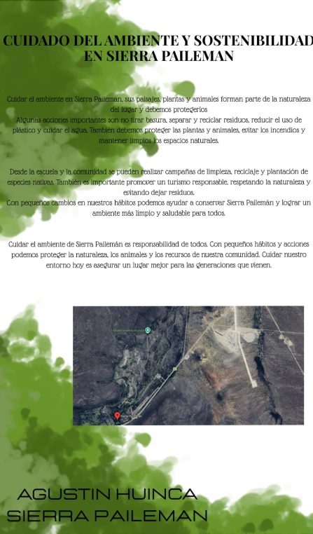
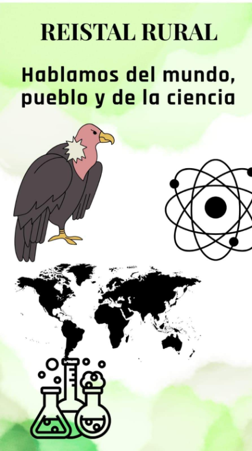
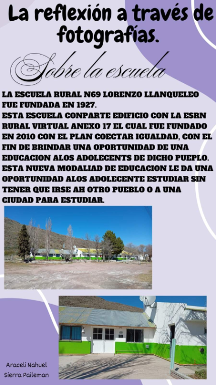

Contexto geográfico
Río Negro es una de las seis provincias que integran la Patagonia Argentina, con una superficie de 203.013 km² dividida en 13 departamentos. Destaca el río Negro (color verde oscuro), uno de los 5 más grandes del país y el más caudaloso de la Patagonia.

La meseta y Somuncurá
Las mesetas presentan un contraste escalonado que desciende hacia el mar. Su mayor exponente es la meseta de Somuncurá ("piedra que suena o habla" en lengua de los pueblos originarios), con cañadones, arroyos, lagunas, conos volcánicos y sierras.

Sierra Pailemán
Paraje de 86 habitantes reconocido por la conservación del Cóndor Andino y su ecosistema. Es considerado un ave sagrada y mensajero espiritual por las comunidades originarias. Es escenario de la liberación de cóndores andinos más grande del país, un ritual ancestral.

La Escuela Rural N.º 69
La Escuela Rural N.º 69 "Lorenzo Llanqueleo" fue fundada en 1927. Comparte edificio con la ESRN Rural Virtual Anexo 17, fundada en 2010 con el plan Conectar Igualdad. Su objetivo es brindar la oportunidad de educación secundaria a los adolescentes del paraje sin necesidad de trasladarse a otra ciudad.